Our Journey
這些年，有人加入，有人離開，有人留下。
每一張照片裡的笑容，都是大天使的一部分。
謝謝每一位曾經、現在、未來和我們並肩的夥伴。
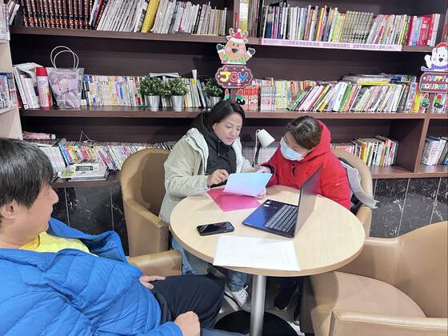
在小小的空間裡，圍著一張桌子，談著同一個信念：把長輩照顧好，也把彼此照顧好。
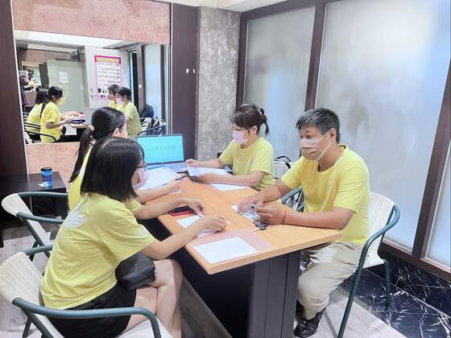
沒有人天生就會照顧。我們一起討論、一起補課，把每一個案家放在心上。
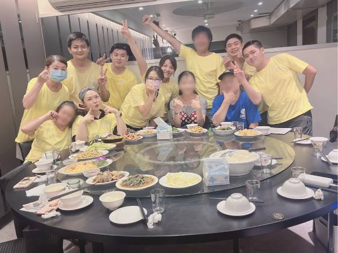
忙完一段，大家坐下來吃頓飯。那一桌的熱鬧，是我們第一次覺得「像一家人」。
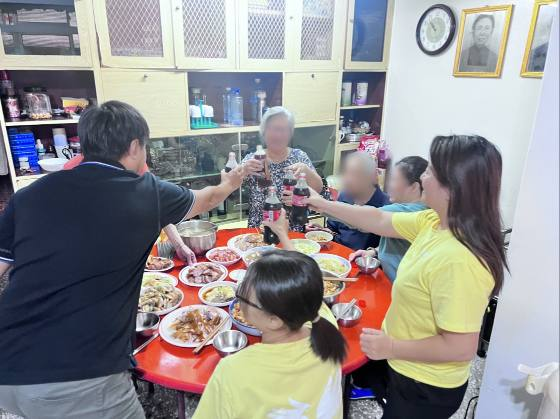
我們照顧的不只是個案，是把他們當成自己的長輩。能一起舉杯，是我們的福氣。
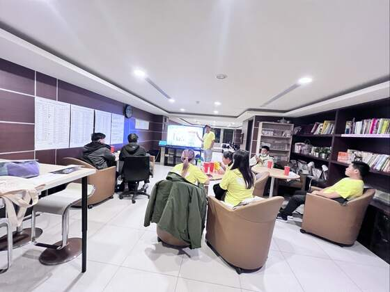
第一年不容易。謝謝每一個咬著牙、留下來的人。
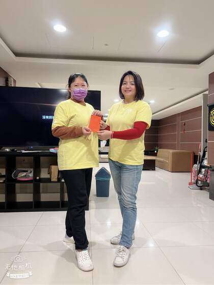
新春，老闆親手把紅包交到每個人手上。一句「辛苦了」，比什麼都重。
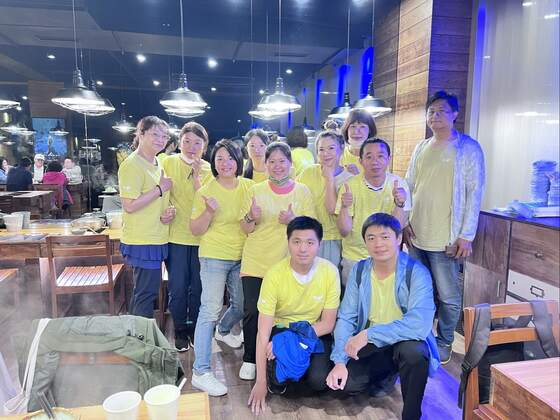
不知不覺，這張合照快站不下了。每一張新面孔，都是一份新的信任。
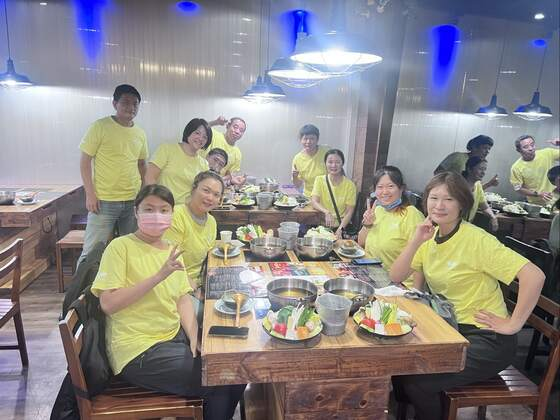
工作再累，有這群人一起吃飯、一起笑，就充得回電。
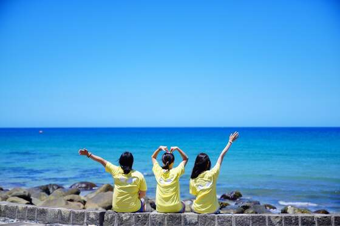
放下工作，到海邊大喊一聲。照顧別人之前，也要好好照顧自己。
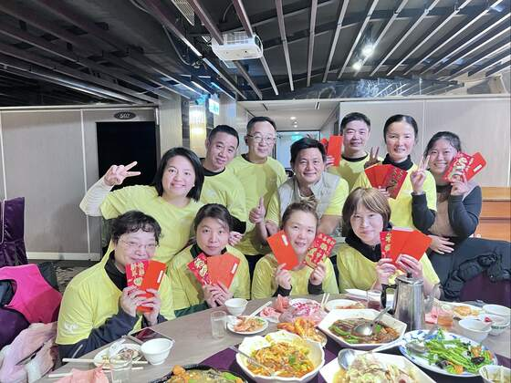
桌子更長了，笑聲更響了。我們一起，把日子過成了想要的樣子。
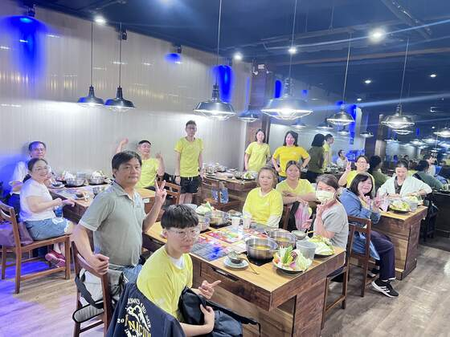
我們和長輩、和家屬，慢慢變成朋友。這份信任，是一天一天累積的。
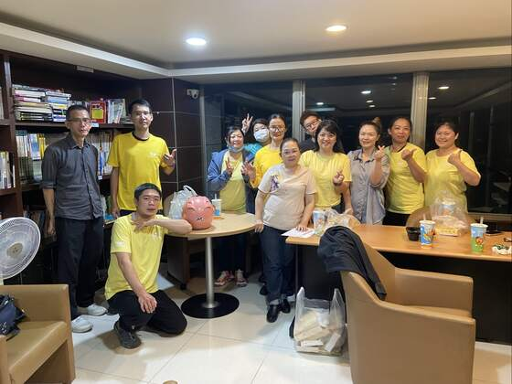
給夥伴的一份小禮、一句感謝。先被好好對待的人，才能好好對待別人。
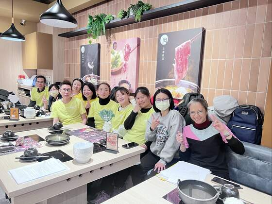
桌邊多了好多年輕的臉。大天使的故事，換他們繼續寫下去。
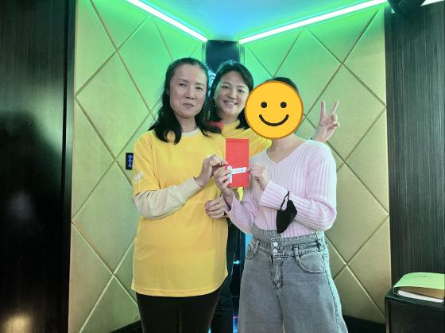
一個紅包、一句辛苦了。從幾個人走到今天，因為有你們，才走得到。
大天使長照有限公司附設新北市私立大天使居家長照機構 ｜ 中和・永和・新店